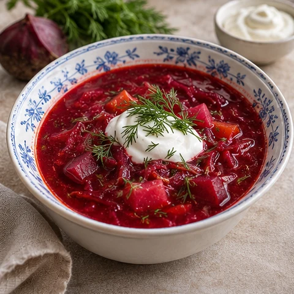
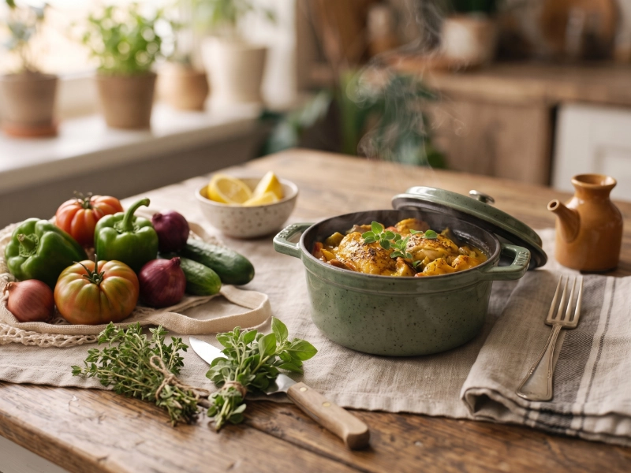
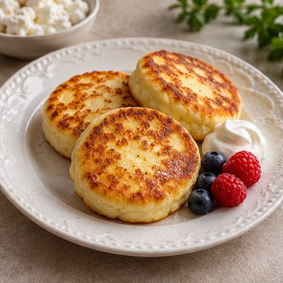
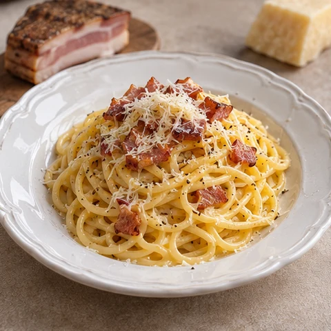
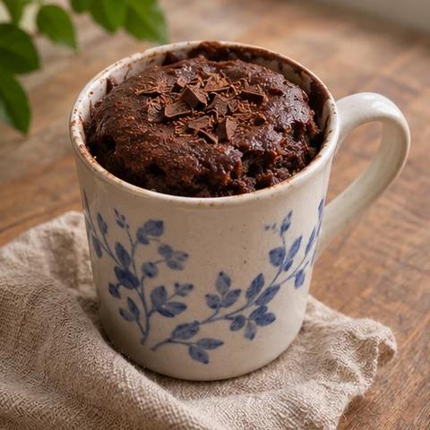

SmakHub — рецепти під ваші продукти
Знаходьте страви за назвою, категорією або інгредієнтами, які вже є вдома. Зберігайте улюблене та діліться власними рецептами.

Категорії
Рецепти, які люблять готувати
-
-

-

-

Як це працює
Вкажіть, що є вдома
Введіть два-три продукти, і SmakHub покаже рецепти, у яких є всі вказані продукти.
Оберіть рецепт
Відфільтруйте результати за часом приготування, складністю та категорією.
Готуйте й зберігайте
Дійте за покроковою інструкцією, а вдалі рецепти додавайте в «Збережене».
Ще не маєте акаунта? Зареєструйтеся або увійдіть.